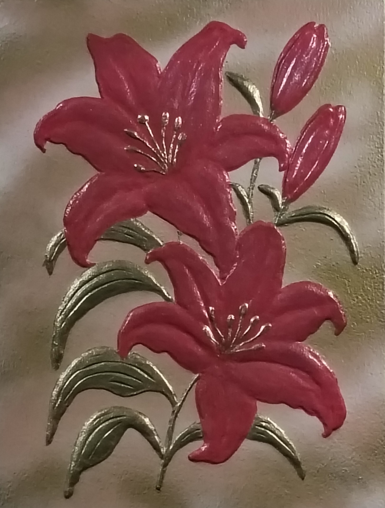

NICOLETA FILIP ART
LIRIO REAL
Composición floral en relieve protagonizada por dos lirios de intenso color rojizo, acompañados por tallos y hojas tratados con acabados metálicos.
Sobre la obra
LIRIO REAL presenta una composición floral protagonizada por dos grandes flores de lirio, dispuestas en diferentes alturas y rodeadas de hojas y tallos.
El volumen del relieve permite destacar los pétalos y los diferentes elementos vegetales, creando una composición de marcado carácter ornamental.
Presentación artística
Los pétalos adquieren especial protagonismo mediante su modelado en relieve y su acabado rojizo, mientras que los elementos vegetales presentan tonalidades metálicas que aportan contraste a la composición.
La disposición ascendente de las flores y los tallos genera sensación de movimiento y profundidad, reforzada por el tratamiento tridimensional de la superficie.
Ficha técnica
- Año
- 2026
- Dimensiones
- 30 × 40 cm
- Soporte
- Madera
- Técnica
- Técnica estándar.
- Categoría
- Floral
Si deseas recibir información sobre esta obra, puedes solicitarla directamente.
SOLICITAR INFORMACIÓN →